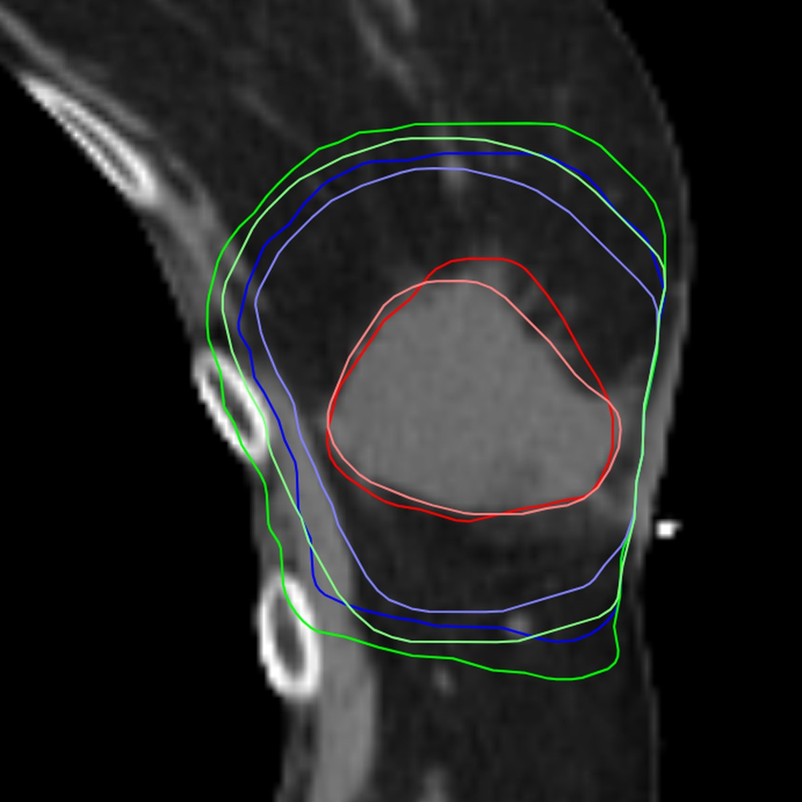
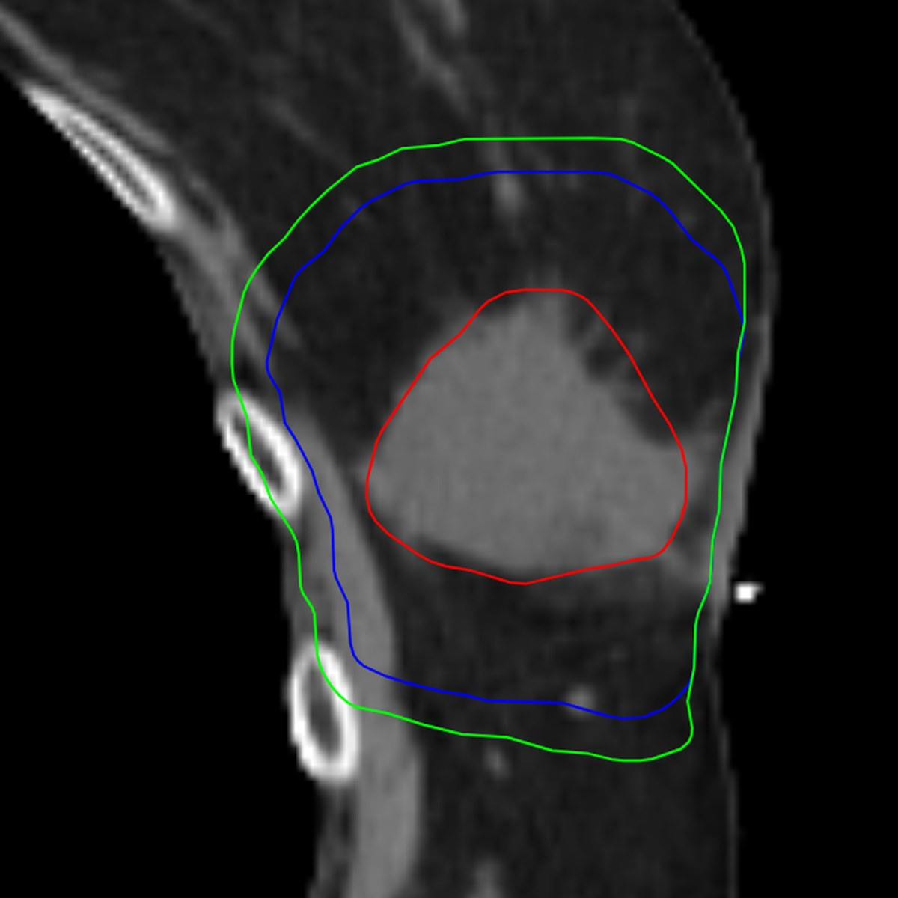
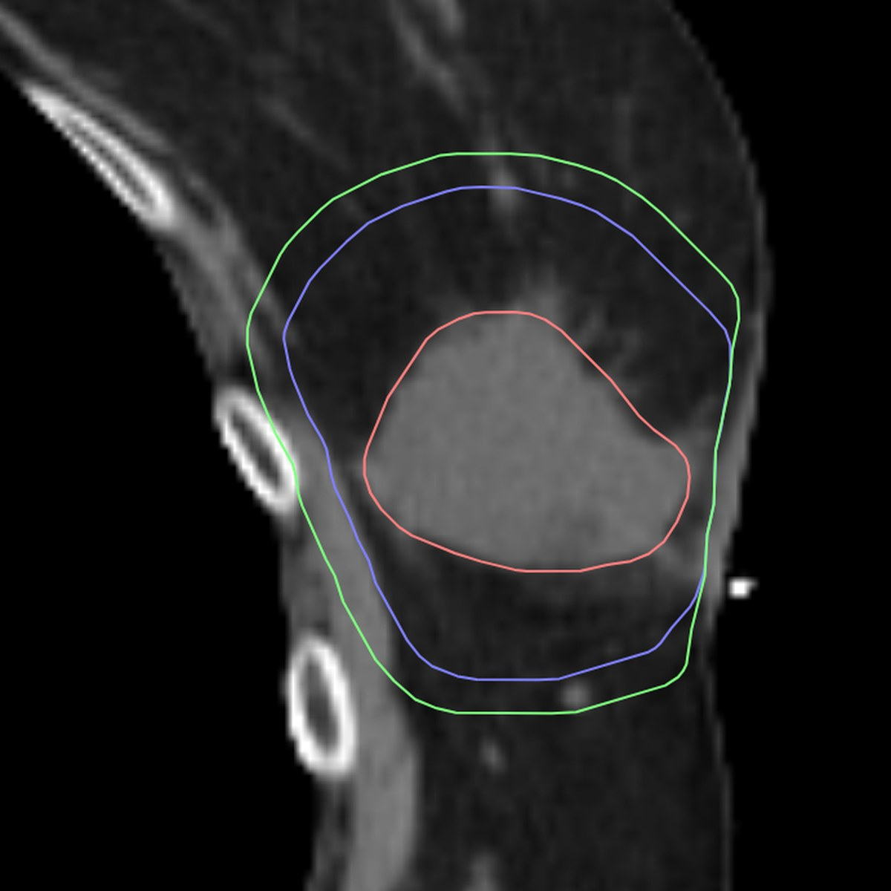
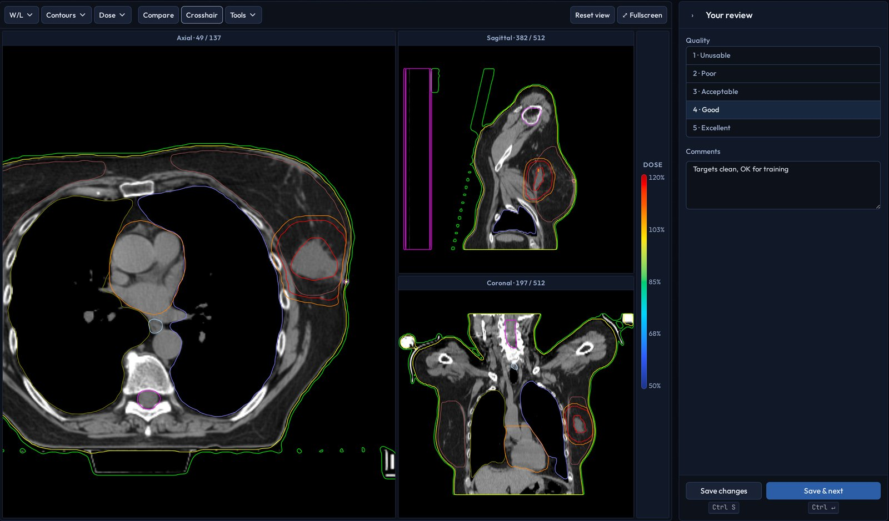
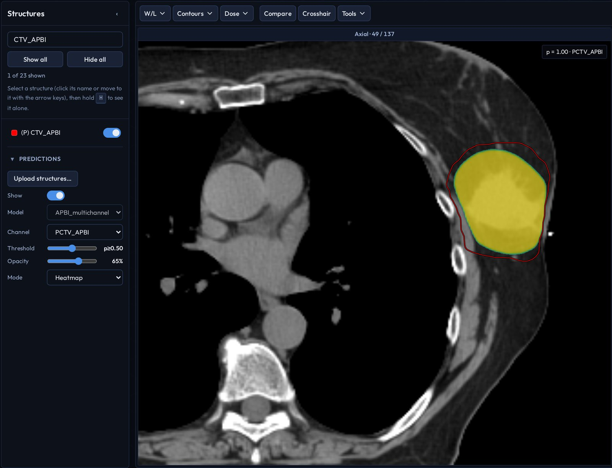
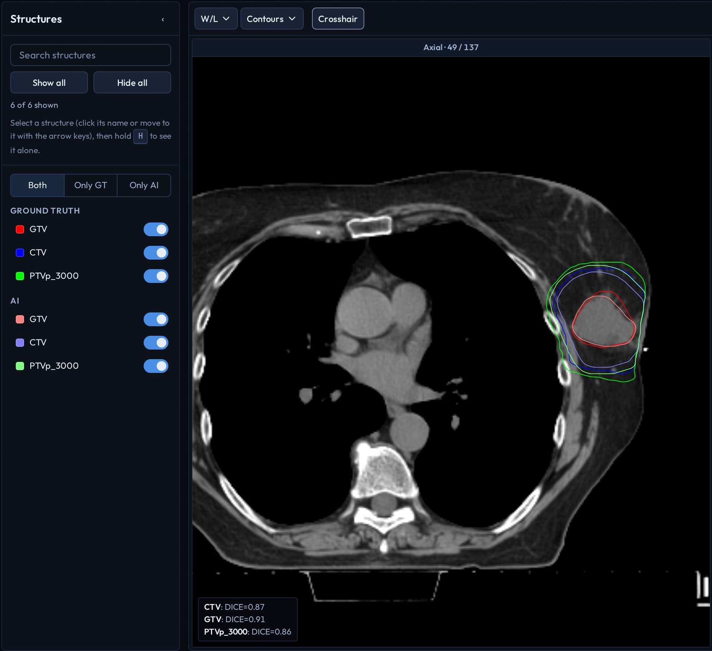
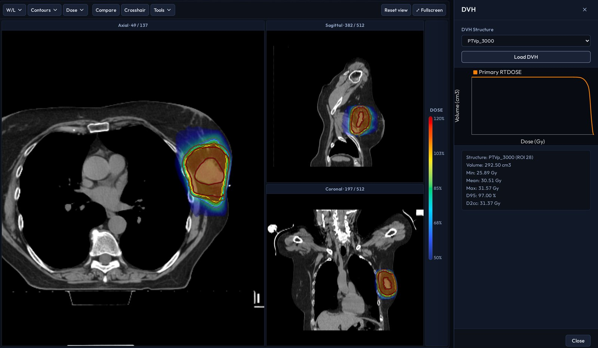

Spinning the Data Engine
A review portal we built in-house to take radiotherapy AI from curated training data to a blinded clinical verdict.
Nicholas Molina, Kelechi Obike, Jonathan Cheng, Rafe McBeth, PhD
Penn Medicine, Department of Radiation Oncology
AI Builder Showcase video, shown in the Commons throughout the conference
Review it blind
Two sets of partial-breast target contours on the same CT slice. One was drawn by a physician and one by our AI model. Reviewers only ever see them as Plan A and Plan B.



-
Plan AHidden from the reviewer
-
Plan BHidden from the reviewer
| Target | Dice |
|---|---|
| GTV | 0.91 |
| CTV | 0.87 |
| PTV | 0.86 |
In the portal, which side is the AI is shuffled for every study with a secret per-project salt, so position never gives it away. Reviewers rate each target as needing no changes, minor or major edits, then pick the plan they prefer. A second, open project shows the same cases with the labels and these metrics on screen.
One portal for every turn of the loop
A model can be trained in days, but hearing whether it is clinically good used to take weeks. The portal puts each step of that loop in the same place, on the same DICOM data.
-
Curate
Reviewers score the quality of ground-truth contours study by study, so only clean cases go into a training set.

-
Predict
Upload a model's raw output with the CT and see it on the image as a mask, a probability heatmap, a confidence penumbra or an entropy map, with a live threshold.

-
Validate
Blinded or open A/B review of AI against physician contours, as above. Structure names that differ between studies, like "(P) GTV" and "(P) GTV_APBI", are matched to the same target automatically.

-
Plan
Dose colour-wash, isodose lines and dose-volume histograms show the treatment-planning context the validated contours feed into.

What reviewers find goes back into curation and the next model.
Tested in a blinded study
An IRB-approved feasibility study ran entirely in the portal's blinded workflow. Three breast radiation oncologists reviewed AI and physician-drawn partial-breast targets for 25 consecutive cases the model had never seen: 75 blinded reviews in all, each rating the GTV, CTV and PTV.
- 64%of reviews with a stated preference favored the AI contours (29 of 45). By case, 12 against 8 (p = 0.50). The other 30 of the 75 reviews stated no preference.
- 88%of AI contour sets were acceptable on all three targets, against 80% physician-drawn (by case, 2 of 3 reviewers; p = 0.73).
- p ≥ 0.40No significant difference in quality scores, AI vs physician: GTV 2.63 vs 2.60, CTV 2.77 vs 2.77, PTV 2.75 vs 2.64.
Berlin E, Byrd B, Molina N, Philbrook S, Kassick M, Freedman GM, Taunk NK, Green WR, McBeth R. A Blinded Comparison of Artificial Intelligence-Generated versus Physician-Drawn Target Contours for Partial Breast Irradiation. ASTRO 2026. View the poster
Full manuscript under review: Berlin EE, … McBeth R. Blinded Comparison of AI-Generated Versus Physician-Drawn Target Contours for Partial Breast Irradiation. Practical Radiation Oncology, AI in Radiotherapy special issue (submitted Oct 2026).
How we built it
Python and Flask on the server, a hand-written canvas viewer in the browser, PostgreSQL for reviews and an Orthanc DICOM server for studies, all packaged with Docker and uv so it starts the same way on any machine. Overlap metrics come from dcm-utils, the DICOM geometry package our lab shares across projects.
It was built largely with Claude Code. We brainstorm a design, write a plan, hand the tasks to subagents and review every change before it merges.
Tell us what you think
Find us at the networking reception on Monday, October 26, 6:00 to 7:00 PM ET. We'd especially like your view on these:
- Is owning your review layer worth it, or is it better bought?
- Where would the blinded flow slow down a busy clinician?
- Would your institution repeat the blinded comparison on its own model and conventions?
- Which prediction views (mask, heatmap, penumbra, entropy) are most useful clinically?
- How do you map structure names across sites, for example to AAPM TG-263?
Or write to Nicholas Molina at nicholas.molina@pennmedicine.upenn.edu, or Rafe McBeth at rafe.mcbeth@pennmedicine.upenn.edu.
Also from our lab
Clinical Validation of Commercial AI Prostate SBRT Planning: a commercial AI planner against our manual plans, and the in-house fix for what it missed. Scientific poster on Monday, October 26, 12:15 to 1:00 PM ET, in the Commons.
Beyond Deployment: continuous quality assurance for auto-segmentation models once they are live. Live demo on Monday, October 26, 4:30 to 6:00 PM ET, Arthur H. Rubenstein Auditorium.